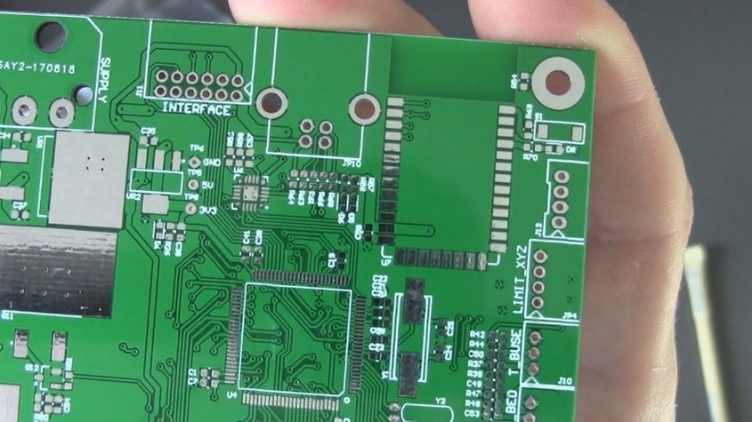

ST2CSE
Table of Contents
Réalisation d'un circuit imprimé (PCB Printed Circuit Board)
Le circuit imprimé est le meilleur moyen d'interconnecter les composants de votre système embarqué. Sa fabrication s'étant largement démocratisé, il constitue une étape nécessaire pour un prototype convaincant. Les avantages d'un PCB:
- Miniaturisation (utilisation de composants montés en surface, finesse de fabrication)
- Solidité
- Fiabilité acrrue des contacts électriques
- Possibilité de faire un plan de masse
- Minimisation des resistances parasites
- Bonne dissipation thermique
- Bonne protection contre les pertubations électro magnétique

Figure 1: PCB
La réalisation d'un PCB se fait en 3 grandes étapes:
L'édition du schéma
Durant cette étape, vous interconnectez les symboles de chaque composant entre eux. Le placement n'a pas d'importance, seul les connections comptent. A la suite de la saisie du schéma, le fichier résultant est une une netlist (liste des interconnections). Vous pouvez evidement exporter votre schéma en pdf.
Le placement-routage
Suite à la génération de la netlist, il faut placer et router les empreintes associés à chaque symbole dans un espace prédéfinie. Le fichier résultant est un fichier GERBER.
La fabrication
Réaliser par un prestataire externe, il faut compter en général 2-3 semaines pour la fabrication et l'envoi. Ce prestataire aura besoin de votre fichier GERBER.